Conversation 720
Existential Cosmic Game
Prompt 1 · You
a game where everyone wins every second of the day, but the apex is the convergence point the one focal point the cornerpoint where cornerstone singular apex point is infinitesimally unobtainable
Response 1 · Google AI Mode
That sounds like a description of an existential paradox, a cosmic game, or a profound philosophical thought experiment.
Everyone is continuously winning, yet the ultimate, singular victory remains forever just out of reach. This mirrors concepts like asymptotic progress (approaching a line but never touching it) or Zeno's paradoxes, where the destination is infinitesimally divided so you can never truly "arrive."
Are you exploring this as a concept for a game design mechanic, a philosophical essay, or perhaps a piece of creative fiction? Let me know what you are building so we can flesh out the details.
Prompt 2 · You
the mechanics formalized
Response 2 · Google AI Mode
To formalize this paradox into concrete game mechanics, we can structure it using asymptotic reward scaling, infinite incrementalism, and a cooperative macro-goal.
Here is the formalized design framework for The Convergence Point:
1. The Core Loop: Perpetual Winning
Because "everyone wins every second," the game eliminates failure states. Traditional loss loops are replaced by continuous, positive feedback loops.
- Ambient Generation: Players continuously accumulate a base currency or score (W) automatically every second of real time (t).
- The "Win" Condition: Every player action succeeds. There are no "Miss" or "Fail" mechanics. Actions simply determine the velocity of the win.
- Positive-Only Variance: Challenges do not subtract points; they only multiply the rate of continuous accumulation.
2. The Apex: Asymptotic Scaling
The "singular apex point" (A) is mathematically structured so that players can approach it infinitely but never reach it. This uses an asymptotic limit function where the effort required approaches infinity as the distance to the apex approaches zero.
Progress (P)
^
A |------------------------------- (The Unobtainable Apex Limit)
| . '
| . '
| . '
| . '
| . '
| . '
0 +----------------------------------> Time / Combined Effort (E)
- The Formula: Player Progress (P) toward the Apex is governed by a function like:
(Where A is the Apex value, E is the total global effort, and k is a scaling constant.) - The Infinitesimal Micro-Step: As players get closer to A, the cost to gain the next decimal point increases exponentially. If the apex is 100%, players will reach 99.9%, then 99.99%, then 99.999%, requiring exponentially more input for each smaller fraction.
3. The Convergence: Collaborative Synergy
The "cornerstone singular apex point" cannot be pursued alone. The mechanic requires Universal Convergence.
- The Focal Pool: All players contribute their individual winnings (W) into a singular, global focal point.
- The Paradoxical Attractor: The global pool acts as a gravity well. The more total wealth or progress contributed globally, the heavier the compression of the apex.
- Diminishing Marginal Utility: The closer the global pool gets to the apex, the more individual player contributions are flattened, forcing the entire player base to coordinate perfectly just to move the needle by a Planck length.
4. Summary of Game Systems
| Mechanic | System Design | Player Experience |
|---|---|---|
| Perpetual Victory | Passive ticker + Guaranteed success loops | Total absence of friction or anxiety. |
| The Convergence | Unified global leaderboard/pool | Absolute cooperation; no PvP competition. |
| The Apex | Asymptotic limit math (Lim → A) | Fascination with the infinitesimally small. |
Would you like to develop this into a mathematical prototype (like defining the exact economic balancing), or should we design the visual/thematic interface of how players witness this convergence?
Prompt 3 · You
interactive dashboard
Response 3 · Google AI Mode
Here is an interactive formalized dashboard for The Convergence Point.
This system models the mathematical paradox: you are guaranteed to constantly win and accumulate points, but as the global player base pushes toward the singular Apex, the distance to the goal shrinks by infinitesimally smaller fractions.
Action:
AI-generated. Don't enter sensitive personal info.
How the Mechanics Operate:
- The Perpetual Win Ticker: Notice how your individual score increases non-stop every single second. There is no failure state, and every manual click adds a multiplier to ensure a constant feeling of progression.
- The Asymptotic Limit: As you invest your winnings into the "Convergence Pool," the distance to the Apex shrinks. However, because it follows an asymptotic curve (), you will quickly hit 99%, but reaching 99.9%, 99.99%, and 99.999% requires exponentially more input.
- The Unobtainable Cornerpoint: The apex point is a mathematical limit. The game tracks your distance to the apex down to decimal places smaller than a Planck length, making it infinitely close yet structurally impossible to ever touch.
Would you like to introduce global cooperative events that temporarily boost the convergence rate, or should we define the narrative unlocks that happen as the universe approaches further decimal places (e.g., reaching 99.9999%)?

Recorded diagram labels and controls: play_arrow BASE HORIZON CURRENT TRAJECTORY THE APEX POINT APEX PROXIMITY 99.1403862% TOTAL SCORE 144,444 CONVERGENCE VEC 75.0/s Simulation Increment Rate 50x Global Multiplier Effort 1.5M Formula: Zeno Paradox Decay expand_more Zeno Paradox Decay Logarithmic Ascent Trigger Infinitesimal Boost
Prompt 4 · You
convection pattern funnel where 90 degree control point bezier is the apex and there R no other control points ofcourse...
Response 4 · Google AI Mode
To formalize this specific geometry, we must translate your vision into a pure mathematical curve.
If there is only one apex control point at a angle and no other control points, we are describing a Quadratic Bézier curve () where the start point () and end point () form the wide base of the funnel, and the single control point () acts as the sharp anchor pulling the "fluid" into a sharp, infinitesimally tight vortex.
Because a Bézier curve never actually touches its control point unless it is at the exact start or end, the apex remains the perfectly unobtainable gravitational center of the fluid flow.
Here is the interactive visual simulation modeling this exact thermodynamic flow pattern:
AI-generated. Don't enter sensitive personal info.
The Mechanics of the Funnel:
- The Asymptotic Vector: The particles follow a vector field compressed by the Bézier equation. They accelerate as they approach the corner, getting infinitely close to the apex point, but the curve's math ensures they warp and redirect before ever physically occupying the exact coordinate of the control point.
- The Convection Cycle: Matter enters from the wide, cool outer boundary, gets superheated and compressed through the focal choke point, and radiates back outward in a perpetual, seamless victory loop.
Would you like to adjust the particle density and velocity equations to see how turbulence behaves near the apex, or shall we map how individual player inputs warp the angle of that cornerstone?

Recorded diagram labels and controls: Thermal Ascent Inflow Boundary play_arrow Drag apex control point to warp flow pattern Throat Speed 8.3 m/s Symmetry Index 100% Active Nodes 60 Lanes Flow Mass Velocity 2.5x Funnel Entry Width 35%